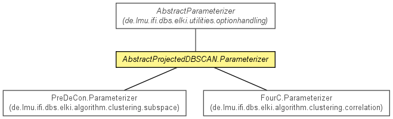

de.lmu.ifi.dbs.elki.algorithm.clustering
Class AbstractProjectedDBSCAN.Parameterizer<V extends NumberVector<V,?>,D extends Distance<D>>
java.lang.Object
 de.lmu.ifi.dbs.elki.utilities.optionhandling.AbstractParameterizer
de.lmu.ifi.dbs.elki.algorithm.clustering.AbstractProjectedDBSCAN.Parameterizer<V,D>
de.lmu.ifi.dbs.elki.utilities.optionhandling.AbstractParameterizer
de.lmu.ifi.dbs.elki.algorithm.clustering.AbstractProjectedDBSCAN.Parameterizer<V,D>
- All Implemented Interfaces:
- Parameterizer
- Direct Known Subclasses:
- FourC.Parameterizer, PreDeCon.Parameterizer
- Enclosing class:
- AbstractProjectedDBSCAN<R extends Clustering<Model>,V extends NumberVector<V,?>>
public abstract static class AbstractProjectedDBSCAN.Parameterizer<V extends NumberVector<V,?>,D extends Distance<D>>
- extends AbstractParameterizer

Parameterization class.
| Methods inherited from class java.lang.Object |
clone, equals, finalize, getClass, hashCode, notify, notifyAll, toString, wait, wait, wait |
innerdist
protected DistanceFunction<V extends NumberVector<V,?>,D extends Distance<D>> innerdist
epsilon
protected D extends Distance<D> epsilon
outerdist
protected LocallyWeightedDistanceFunction<V extends NumberVector<V,?>> outerdist
minpts
protected int minpts
lambda
protected Integer lambda
AbstractProjectedDBSCAN.Parameterizer
public AbstractProjectedDBSCAN.Parameterizer()
configInnerDistance
protected void configInnerDistance(Parameterization config)
configEpsilon
protected void configEpsilon(Parameterization config,
DistanceFunction<V,D> innerdist)
configMinPts
protected void configMinPts(Parameterization config)
configOuterDistance
protected void configOuterDistance(Parameterization config,
D epsilon,
int minpts,
Class<?> preprocessorClass,
DistanceFunction<V,D> innerdist)
configLambda
protected void configLambda(Parameterization config)